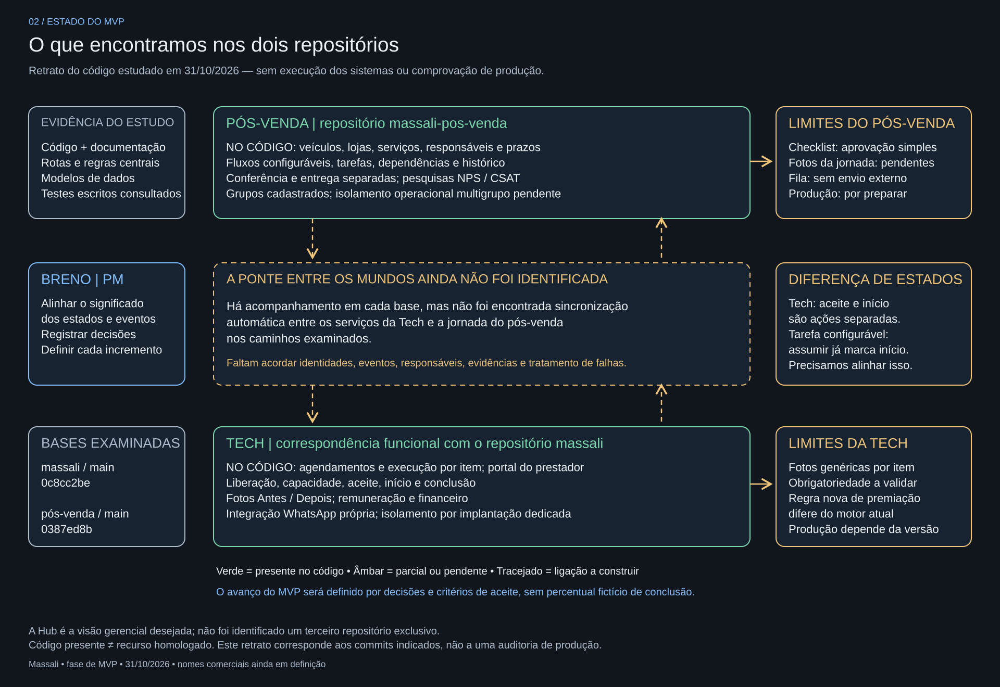

1. Como entendo o projeto

Abrir desenho ampliado · Baixar versão editável para Excalidraw
Dois mapas comparáveis para orientar a conversa do MVP. A visão integrada é uma proposta; o estado atual representa a leitura dos commits de 31/10/2026.
Abrir desenho ampliado · Baixar versão editável para Excalidraw

Abrir desenho ampliado · Baixar versão editável para Excalidraw
Conectar os registros por veículo e serviço; alinhar aceite e início; estruturar o checklist fotográfico; decidir o que cada público pode consultar; validar o fluxo completo em ambiente de teste.
Breno conduz os próximos passos como PM. Este mapa não estabelece cronograma nem transforma toda a visão em escopo imediato do MVP.